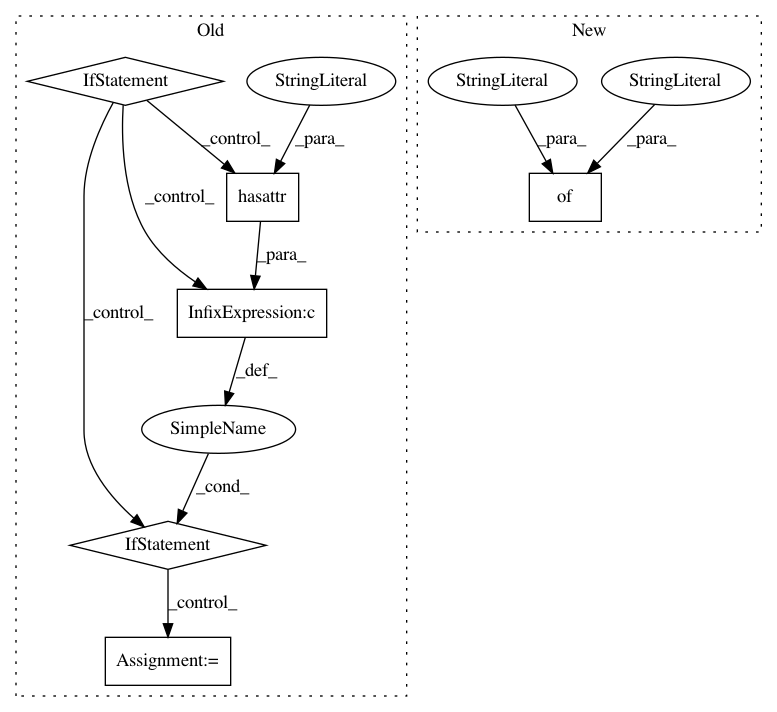

8b084618a0ba7d0f79275c3e5578c85b4d6d8279,chainercv/links/loss/semantic_segmentation_loss.py,PixelwiseSoftmaxClassifier,__call__,#PixelwiseSoftmaxClassifier#Any#Any#,35
Before Change
def __call__(self, x, t):
self.y = self.predictor(x)
if self.class_weight is not None:
if hasattr(x.data, "device") \
and not hasattr(self.class_weight, "device"):
self.class_weight = cuda.to_gpu(
self.class_weight, x.data.device)
self.loss = F.softmax_cross_entropy(
self.y, t, class_weight=self.class_weight,
ignore_label=self.ignore_label)
else:
self.loss = F.softmax_cross_entropy(
self.y, t, ignore_label=self.ignore_label)
reporter.report({"loss": self.loss}, self)
if self.compute_accuracy:
pa, mpa, miou, fwiou = _segmentation_accuracies(
self.y, t, self.n_class)
After Change
label = self.xp.argmax(self.y.data, axis=1)
pas, mpas, mious, fwious =\
eval_semantic_segmentation(label, t.data, self.n_class)
reporter.report({
"pixel_accuracy": self.xp.mean(pas),
"mean_pixel_accuracy": self.xp.mean(mpas),
"mean_iou": self.xp.mean(mious),
"frequency_weighted_iou": self.xp.mean(fwious)
}, self)
return self.loss
In pattern: SUPERPATTERN
Frequency: 3
Non-data size: 6
Instances
Project Name: chainer/chainercv
Commit Name: 8b084618a0ba7d0f79275c3e5578c85b4d6d8279
Time: 2017-05-26
Author: yuyuniitani@gmail.com
File Name: chainercv/links/loss/semantic_segmentation_loss.py
Class Name: PixelwiseSoftmaxClassifier
Method Name: __call__
Project Name: brian-team/brian2
Commit Name: e52a4ef94b4a3a0b513debfe02ea2e3cc0e52aa5
Time: 2013-10-02
Author: marcel.stimberg@ens.fr
File Name: brian2/core/variables.py
Class Name: VariableView
Method Name: __setitem__
Project Name: Microsoft/nni
Commit Name: 2de52a8976971da4836727ba9242fedcc7474878
Time: 2020-01-16
Author: 656569648@qq.com
File Name: src/sdk/pynni/nni/compression/torch/compressor.py
Class Name: Pruner
Method Name: export_model